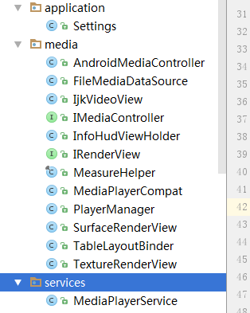

这段时间研究视频播放功能，android系统自带的播放器功能少，
支持的视频格式又有限制，只能放弃，网上一些成熟的第三方库商用后收费，
几番寻找后发现免费的开源库ijkplayer，这是Bilibili的一款基于ffmpeg视频编解码库的
轻量级Android/IOS播放器控件，Bilibili作为我大天朝最大异（tong）性交友平台，对开源界也是有贡献的。
ijkplayer提供了录制、转换以及流化音视频的完整解决方案，
可以开发出弹幕，视频旋转，位移，缩放控制，视频宽高比例设置，视频进度等功能。
但实践过程中遇到了很多坑，官方文档又不详尽，比如视频的多种格式支持，cpu架构的兼容等问题。
网上编译的so库也是存在问题，无奈之下，只能自己重新去编译一遍ijkplayer的源码。
准备工作
系统环境
linux环境：Ubuntu 18.04 （window下使用cygwin坑更多）
Android NDK：android-ndk-r14b
注意：此项目目前最高支持NDK14的版本，以上版本编译时报错：You need the NDKr9 or later
如果不能确定linux是64还是32位，打开终端：Ctrl+Alt+T，输入：sudo uname –m,结果为i686为32位，X86_64则为64位
Android SDK：选择Linux的版本
配置环境变量
方法一：（推荐）
打开主文件夹目录，按Ctrl+H打开隐藏文件，找到.bashrc文件，打开
在最后加上你自己的android ndk和android sdk的路径，比如我的：1
2
3
4
5ANDROID_NDK=/home/threetree/Downloads/android-ndk-r14b
export ANDROID_NDK
ANDROID_SDK=/home/threetree/Downloads/android-sdk-linux
export ANDROID_SDK
PATH=${PATH}:${ANDROID_NDK}:${ANDROID_SDK}
保存完成
方法二
在终端使用：sudo gedit /etc/profile（这里我遇到使用vi，vim指令打开文件进行修改，无法修改只读文件）
在配置文件末尾加入如下部分并保存：1
2export PATH=~/Downloads/android-sdk-linux:$PATH
export PATH=~/Downloads/android-ndk-r14b:$PATH
让环境变量立即生效source /etc/profile
测试sdk是否配置成功：adb -version
如未安装adb，根据提示安装adb，安装完成后重复上面指令
测试ndk是否配置成功：ndk-build -v
安装若干软件
1 | sudo apt-get install openjdk-8-jre-headless |
下载ijkplayer-android(最新版为k0.8.8)
下载ijkplayer源代码：1
2
3
4cd
git clone https://github.com/Bilibili/ijkplayer.git ijkplayer-android
cd ijkplayer-android
git checkout -B latest k0.8.8
下载相关的android ffmpeg源代码：./init-android.sh
如果视频播放需要支持Https协议的还需要执行一遍如下初始化脚本：./init-android-openssl.sh
下载过程可能需要一段时间，去撸几局炉石传说吧~
开始编译
如果视频播放不需要支持Https协议，可跳过这一步
编译各个平台的openssl
1 | cd android/contrib |
全平台编译：./compile-openssl.sh all
分平台编译：1
2
3
4
5./compile-openssl.sh armv7a
./compile-openssl.sh armv5
./compile-openssl.sh arm64
./compile-openssl.sh x86
./compile-openssl.sh x86_64
编译各个平台的ffmpeg（坑最多的就是这一步啦）
选择解码包
根据官方的说法，我们根据需要选择解码包，
默认的情况是较少的codec/format,生成较小尺寸的包。
选择默认，可以跳过这一步。
在默认基础上包含hevc功能，执行下面命令：1
2
3
4cd ../..
cd config/
rm module.sh
ln -s module-lite-hevc.sh module.sh
最多的codec/format,执行下面命令：1
2
3
4cd ../..
cd config/
rm module.sh
ln -s module-default.sh module.sh
编译ffmpeg
1 | cd .. |
选择平台,执行相应的命令：1
2
3
4
5
6./compile-ffmpeg.sh all
./compile-ffmpeg.sh armv7a
./compile-ffmpeg.sh armv5
./compile-ffmpeg.sh arm64
./compile-ffmpeg.sh x86
./compile-ffmpeg.sh x86_64
如果一切顺利，恭喜你
如报错：fatal error: linux/perf_event.h: No such file or directory
执行：$ vim ~/ijkplayer-android/config/module.sh
在结尾加入这一行：export COMMON_FF_CFG_FLAGS="$COMMON_FF_CFG_FLAGS --disable-linux-perf"
保存后重新clean，重新编译
如报错：ERROR: Failed to create toolchain.sudo apt-get install python
安装python后再执行编译即可
编译ijkplayer native代码
选择平台,执行相应的命令：1
2
3
4
5
6./compile-ijk.sh all
./compile-ijk.sh armv7a
./compile-ijk.sh armv5a
./compile-ijk.sh arm64
./compile-ijk.sh x86
./compile-ijk.sh x86_64
编译好后就能在android/ijkplayer目录中,找到libs
里面就是我们需要的编译好的so库
开始使用
开始精简工程，将官方demo里相关的文件拿来使用
找到下载好的ijkplayer源码，找到目录android-》ijkplayer-》ijkplayer-example
找到里面的java源码，根据下图文件，导入到我们自己的工程：

接下来把我们编译好的so库文件引入到相应cpu架构的文件夹下面
稍微配置下gradle：1
2
3
4
5
6
7
8
9
10
11
12
13
14
15
16
17
18
19
20
21
22
23
24
25
26
27
28android {
compileSdkVersion 25
buildToolsVersion "25.0.3"
defaultConfig {
applicationId "com.muyan.ijk"
minSdkVersion 15
targetSdkVersion 25
versionCode 1
versionName "1.0"
testInstrumentationRunner "android.support.test.runner.AndroidJUnitRunner"
ndk {
//设置支持的SO库架构
abiFilters "armeabi-v7a", "x86","arm64-v8a","x86_64"
}
}
buildTypes {
release {
minifyEnabled false
proguardFiles getDefaultProguardFile('proguard-android.txt'), 'proguard-rules.pro'
}
}
sourceSets {
main {
jniLibs.srcDirs = ['libs']
}
}
}
根据平台，添加相应的依赖：1
2
3
4
5
6
7
8 compile 'tv.danmaku.ijk.media:ijkplayer-java:0.8.8'
compile 'tv.danmaku.ijk.media:ijkplayer-armv7a:0.8.8'
compile 'tv.danmaku.ijk.media:ijkplayer-exo:0.8.8'
// compile 'tv.danmaku.ijk.media:ijkplayer-armv5:0.8.8'
// compile 'tv.danmaku.ijk.media:ijkplayer-arm64:0.8.8'
// compile 'tv.danmaku.ijk.media:ijkplayer-x86:0.8.8'
// compile 'tv.danmaku.ijk.media:ijkplayer-x86_64:0.8.8'
简单的使用IjkVideoView:
xml:1
2
3
4
5
6
7
8
9
10<?xml version="1.0" encoding="utf-8"?>
<RelativeLayout xmlns:android="http://schemas.android.com/apk/res/android"
android:layout_width="match_parent"
android:layout_height="match_parent">
<!--播放控件 IjkVideoView -->
<com.muyan.ijk.media.IjkVideoView
android:id="@+id/video_view"
android:layout_width="match_parent"
android:layout_height="match_parent" />
</RelativeLayout>
javaCode:1
2
3
4
5
6
7
8
9
10
11
12
13
14 mVideoView = (IjkVideoView) findViewById(R.id.video_view);
/** 普通播放 start **/
mVideoView.setAspectRatio(IRenderView.AR_ASPECT_FIT_PARENT);
String url5 = "http://stream1.grtn.cn/tvs2/sd/live.m3u8?_ts&time=1518428696629";
// mVideoView.setVideoURI(Uri.parse(url5));//播放流
String name = "city.avi";
// String name = "mars2.mp4";
// String name = "dog.flv"
mVideoView.setVideoPath(FileUtil.getAdFilePath(name));//播放本地视频
mVideoView.start();
这一切之后，简单的播放多种格式视频的demo就跑起来了，
接下来，根据业务以及ijkplayer相关的api开始开发吧